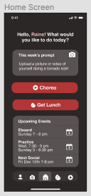
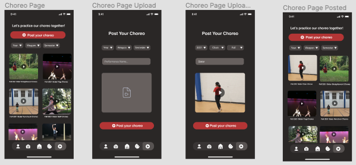
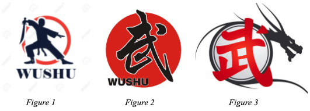

Part I: Creating a High Fidelity Prototype in Figma
Next, we created another interactive prototype that was high-fidelity in look and medium-fidelity
in breadth. We used this prototype to explore the graphic design of our final implementation. We
layed out controls, as we wanted them to appear in our final implementation and decided on
colors, fonts, alignment, icons, and white space. Following these guidelines, we created the screens necessary
for a user to complete one of the tasks (viewing choreo videos) that we previously mentioned on the User Analysis
page.
Home page

Choreo videos

Part II: Design Rationale for the High Fidelity Prototype
Typography:
we chose a sans serif font (Helvetica) because these fonts are easy to read on
a variety of devices in a variety of sizes. It also goes with the clean and
minimalistic design of our application. We also used bolding to denote the titles
of pages, sections, or buttons and kept the text the same color throughout to maintain
consistency.
Color:
deciding on the choice of color was one of the most difficult decisions for us to make.
We wanted a unique color scheme that would both stand out from color schemes of other apps
and also be associated with Wushu. After doing some research, we found that most Wushu logos
used a red, grey, and black color scheme (see figure 1-3 below) so we decided to use these
colors for our application. Instead of a hard black and red we softened the colors in our design
to reduce the contrast and make the design visually more digestible. The buttons on this design
are all colored red to denote that you can make an action and to make them stand out slightly against the grey and
black background colors. The primary background color is a soft black to create a contrast
against the white of the text and the red of the buttons.
Graphic Design Choices:
Almost every user we tested used the icon based navigation bar at the bottom of
the screen home page very easily so we kept that in our design and put the icons
that corresponded to each action next to the buttons on the home page to further
clarify the meaning of each icon. The icons in the nav bar are also arranged
directly next to each other so that the user can quickly navigate between the pages
(in accordance with Fitt’s law). The videos on the choreo page are arranged in a
gallery format (similar to how media is arranged in Google Drive) so that they are
easy to view and intuitive to navigate. All videos have a play button over them so that
it is clear what kind of media they are and that they can be clicked on to be played.
Additionally, spacing between buttons/sections/titles on the page are all vertically
equidistant to increase visual appeal and legibility.

Part III: Heuristic Evaluations
After completing our initial high-fidelity prototype, we had two testers perform a Heuristic Evaluation
on our prototype based on Nielsen's Ten Usability Heuristics. We used this to find usability problems in our
user interface design so that they could be addressed in our final prototype. The ten principles
of usability or “heuristics” are: visibility of system status; match between system and the real world;
user control and freedom; consistency and standards; error prevention; recognition rather than recall;
flexibility and efficiency of use; aesthetic and minimalist design; help users recognise, diagnose
nd recover from errors; and help and documentation.
Part IV: Suggestions from our evaluators
User control and freedom:
“Severity: 3
One of the main functions of the app is the ability to post videos of the user’s own
choreography. Pictured below is the page after the user has already uploaded a video
and is ready to post their video onto the feed. There is not a button in which the user
can cancel or change the video that they are uploading in case they accidentally choose
the wrong video to upload. I noticed that there also isn’t a backward button to go back to
the choreography video page after clicking on the posting your own choreography button.
I would rate the severity of this as a 3 since this must be an issue that happens often
when users accidentally click on a button and want to go back to the other screen or
choose the wrong video to upload. Since this is one of the main features of this app,
they are expecting high traffic on this page therefore the probability of an error
occurring is much higher.”
“For the task, there isn’t a lot of explicitly clear ways to exit the “post your choreo”
page (for example, there is no ‘x’ button anywhere on the page, which makes it unclear as
to how the user could leave the page if they clicked it on accident). There also does not
appear to be an option to undo or cancel the action of posting a choreo video. I would
rate this a 3 in terms of severity, because it does seem to be a Major usability problem
to me. I believe explicitly having the option to close an upload page, such as having a
clickable ‘x’ button in the corner of the page, would make users more comfortable with
using the app, especially since users would only be wanting to upload videos in very
specific cases. Having an undo option or an option to confirm or cancel an upload before
the viådeo is posted would also aid with usability, since it would help users recover
from accidentally posting videos or incorrectly posting videos.”
Error prevention:
"Uploading an incorrect video is a potential error that could
occur with the current design of the app, and it does not appear that there is a
way to prevent or fix this. For example, there does not appear to be a ‘delete
uploaded video’ or ‘undo’ feature. I would also rate this a 3 in terms of severity,
because I believe that any app that features content upload as an option should definitely
give the user the option to delete the content that they have uploaded, to prevent mistakes from cluttering
the page. A feature that allows the user to delete a video they have uploaded would help. Another suggestion
would be to also add an option for e-board members to moderate posted content by possibly allowing e-board
members to have the option to delete videos posted by anyone, in order to prevent irrelevant or spam videos
from being posted.”
Recognition rather than recall:
“Severity: 2
One thing I was confused about was the symbol of
the bitten cookie at the bottom of the navbar. It was through
the home page that I was able to figure out that the cookie symbol was meant
to lead to a page on getting lunch with someone. But after navigating to other pages,
that reminder is not there anymore and I had to recall what it was again. I don’t think
this is a super big issue so I would rate it at a 2 but I was wondering if changing
the symbols or having labels for the navbar would make it easier for users.”
Flexibility and efficiency of use:
“Severity: 1
Other than just having the navbar at the bottom,
the application also has the post a picture, choreography, and get
a lunch button directly on the home page as well which is a shortcut
for users to get to the specific pages they want asap. One thing
that I am confused about is that the choreography button
on the home page. It leads to the exact same page as pressing
the choreography button on the navbar as well. I’m wondering if it’d
be easier for users if it was a direct button to post choreography
instead of just leading to the same page?”
“It doesn’t appear that any shortcuts, personalization, or
customization options have been implemented in this app, at least for this specific task,
that could aid in flexibility and increased efficiency. However, this task only takes
three steps at most to complete, so it is already fairly efficient. I would give this a
2 on the severity rating scale, since it is only a minor usability issue. In order to remedy
this, there could be a customization option that allows users to put an “upload choreo video”
button directly on the homepage, which could help users who know that they will have to post
videos regularly.”
Part V: Summary of our takeaways and modifications
From our feedback, we discovered that we were missing valuable components to help users navigate the app and recover from errors.
Notably, we were missing a "back" arrow from the choreo video post creation page and a way for users to replace a video during the post creation.
Furthermore, once a post was submitted, there was no way to delete posts, which would be important in case a video was uploaded accidentally.
We also received feedback that the bitten cookie icon that we were using for the lunch buddy page did not clearly indicate its functionality. Finally,
there was confusion from our evaluators about the purpose of our choreo button on the home page, since it led to the same page as the navbar.
Based on this feedback, we made the following changes:
Added a "back" button to the post creation page
Added an "x" to the top right corner after a video has been selected to indicate that it can be replaced
Introduced the option to delete videos
Changed the bitten cookie icon to a fork and knife icon, to more clearly signal it's lunch buddy functionality
Modified the text of the choreo button on the homepage from "choreo" to "view choreo" to make it's purpose clear. Although it was suggested
by our evaluators to have this button lead directly to a post creation page, we decided against that.
Since all users would want to watch videos and only weapons group leaders would be posting videos, we opted to
have this button lead to the most frequently used functionality.